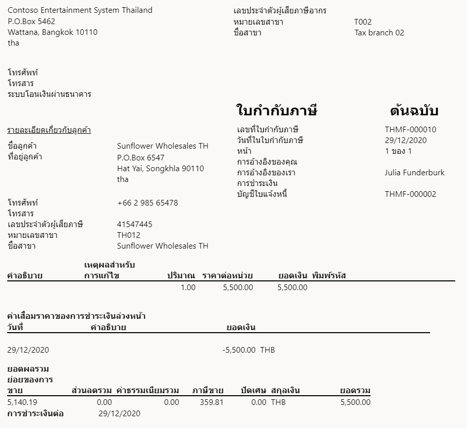
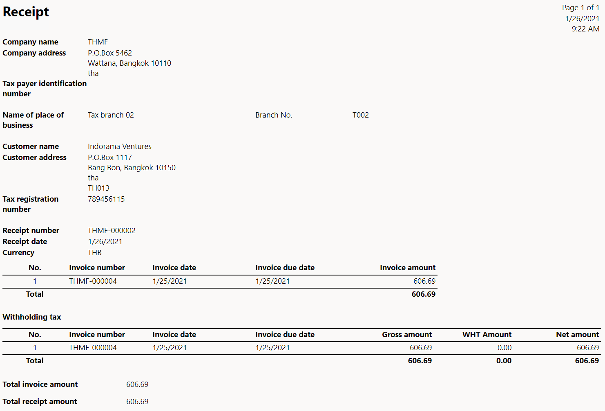
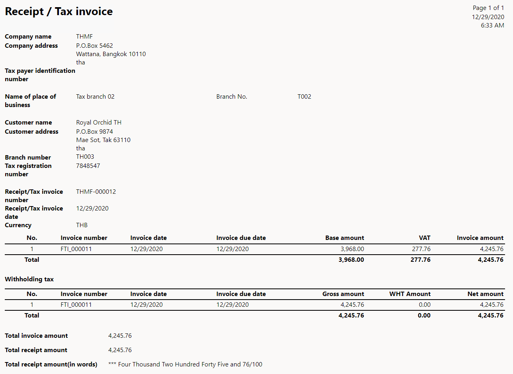

Tax invoices
[!include[banner](../includes/banner.md)]This topic explains how to set up tax invoices and when they are generated.
Preliminary setup
This section provides information about general options that should be set up before you can start to work with tax invoices.
Go to Accounts receivable > Setup > Accounts receivable parameters, and then, on the Number sequences tab, set up number sequences for the following references:
- Free text credit note
- Free text credit note voucher
- Sales credit note
- Sales credit note voucher
- Customer invoice
- Customer invoice voucher
For more information, see Number sequences overview.
Setup
This section provides information about Thailand-specific options that should be set up before you can start to work with tax invoices.
Go to Accounts receivable > Setup > Accounts receivable parameters, and then, on the Number sequences tab, set up number sequences for the following references.
Reference Description Free text debit note The number sequence reference for the debit notes that are generated from free text invoices. Free text debit note voucher The number sequence reference for the debit note transactions when debit notes are generated from free text invoices. Sales debit note The number sequence reference for the debit notes that are generated from sales orders. Sales debit note voucher The number sequence reference for the debit note transactions when debit notes are generated from sales orders. Customer tax invoice The number sequence reference for the tax invoices that are generated from sales order invoices. Customer tax invoice voucher The number sequence reference for customer tax invoice vouchers. Free text tax invoice The number sequence reference for the tax invoices that are generated from free text invoices. Free text tax invoice voucher The number sequence reference for free text tax invoice vouchers. Receipt The number sequence reference for receipts. Receipt / Tax invoice The number sequence reference for receipts or tax invoices. Go to Accounts payable > Setup > Accounts payable parameters, and then, on the Number sequences tab, set up a number sequence for the Vendor unrealized reversal ID reference that you want to associate with the vendor.
Work with tax invoices
Tax invoices are generated when value-added tax (VAT) is realized. Microsoft Dynamics 365 Finance automatically generates a tax invoice when a sales order, a purchase invoice, a purchase order, or a payment that generates a realized VAT entry is posted. If an unrealized VAT entry is generated, an invoice is generated instead of a tax invoice.
For more information, see Thailand unrealized and realized VAT.
If you receive payment from the customer when you post a sales order, follow these steps:
Go to Accounts receivable > Orders > All sales orders.
Select New to create a sales order.
On the Line details FastTab, on the Setup tab, in the Sales tax section, in the Item sales tax group field, select the corresponding sales tax group for realized VAT.
Select Save.
On the Invoice FastTab, in the Generate section, select Invoice.
In the Print options section, set the Print invoice option to Yes.
A tax invoice is printed. Send this invoice to the customer.
If you receive payment from the customer when you post a free text invoice, follow these steps:
- Go to Accounts receivable > Invoices > All free text invoices.
- In the Invoice lines section, in the Sales tax and Item sales tax group fields, select the corresponding sales tax group for realized VAT.
- On the Action Pane, select Post to post the invoice.
- In the Post free text invoice dialog box, in the Parameters section, set the Print invoice option to Yes.
A tax invoice is printed. Send this invoice to the customer.
At any time, you can go back to the sales order or free text invoice to print the tax invoice.
For a sales order: Open the order, and then, on the Invoice FastTab, in the Journals section, select Invoice to open the invoice. On the Invoice FastTab, in the Document section, select View to view the tax invoice or Send to send it.
For a free text invoice: Open the free text invoice, and then, on the Invoice FastTab, in the Document section, select View to view the tax invoice or Send to send it.
The following illustration shows an example of a printed tax invoice.

If you receive payment from the customer after you post a sales order or a free text invoice, follow these steps:
Create a sales order.
On the Line details FastTab, on the Setup tab, in the Sales tax section, in the Item sales tax group field, select the corresponding sales tax group for unrealized VAT.
Either generate an invoice for the order or create a free text invoice.
In the Invoice lines section, in the Sales tax and group Item sales tax group fields, select the corresponding sales tax group for unrealized VAT.
Go to Accounts receivable > Payments > Customer payments journal, and settle the payment. For more information, see Customer payment overview.
Select Print, and then select Payments.
A tax invoice or a receipt/tax invoice is printed.
Note
If the lines on the invoice that a payment is settled to have a realized tax type, a receipt is printed. The receipt shows the invoice lines together with the realized tax type and the line total.
If multiple lines on the settled invoice have realized and unrealized tax types, a receipt and a receipt/tax invoice are printed. The receipt/tax invoice shows the invoice lines together with the unrealized tax type and the line total.
The following illustration shows an example of a printed receipt.

The following illustration shows an example of a printed receipt/tax invoice.
